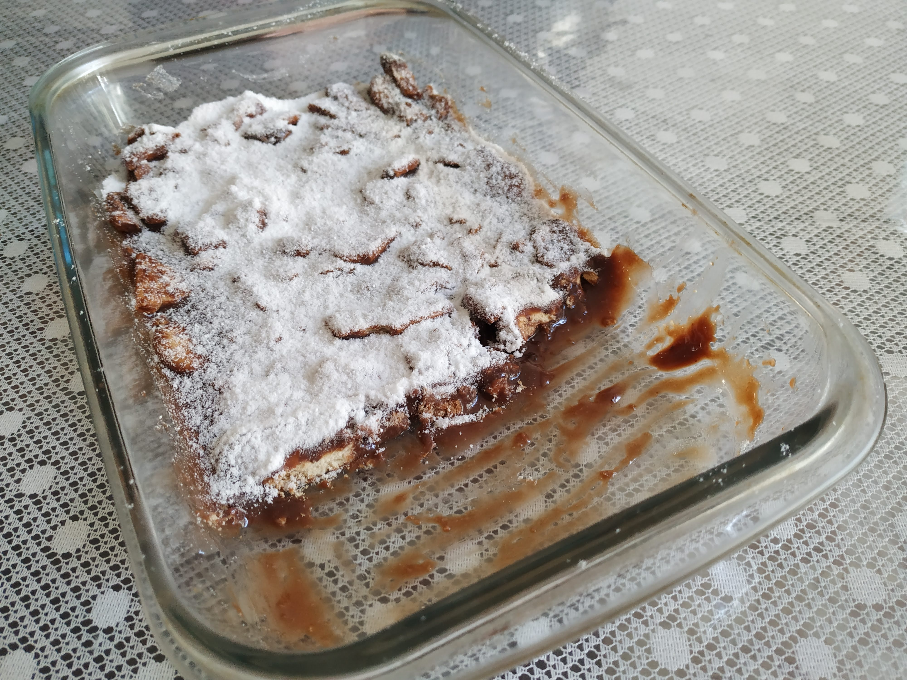
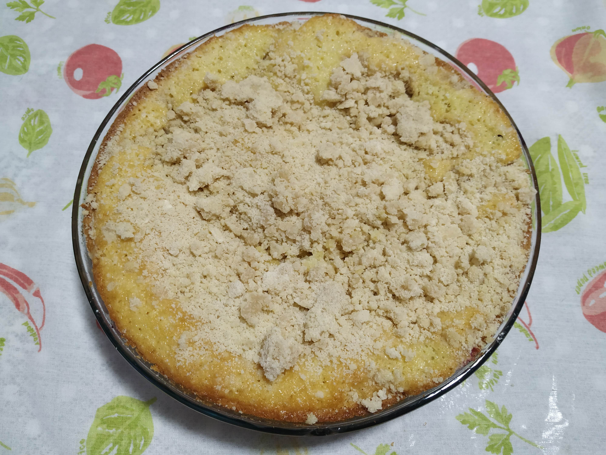

Cuque de Uva
Ingredientes
- 3 xíc. de açúcar
- 4 colheres de manteiga ou margarina
- 3 ovos
- 1 xíc. de amido de milho
- 1 ½ xíc. de leite
- farinha de trigo (de modo que a massa não fique nem mole nem dura)
- 1 colher de fermento químico
Modo de Preparo
Uva Terci ou Isabel ou Vitória (debulhar antes e jogar um pouco de farinha de trigo para não afundar)
Farofa:
50 g de margarina ou manteiga
1 xícara de farinha de trigo
1 xícara de açúcar
canela para polvilhar
Bater o açúcar e a manteiga, adicionar a gema, o leite, o amido, o trigo, as claras em neve e o fermento. Colocar numa assadeira e por cima jogar as uvas que estavam previamente escorridas e envoltas com farinha de trigo.
Fazer a farofa misturando com as mãos os ingredientes e jogar por cima da cuca.
Obs.: prefiro fazer a farofa colocando numa outra forma sozinha, deixando no forno uns 10 min para depois jogar sobre a cuca quando a mesma já está meio assada para que não mergulhe.


